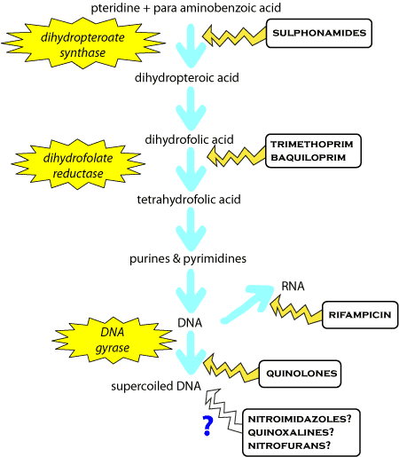

Fluoroquinolones are derived from nalidixic acid, which itself has fallen from use because of neurotoxicity problems. The fluoroquinolones are one of the newest groups of antibiotics (at least in veterinary medicine) and therefore subject to most market hype. Enrofloxacin, marbofloxacin, orbifloxacin, sarafloxacin and danofloxacin are in veterinary use in some countries. Norfloxacin and enrofloxacin's main metabolite ciprofloxacin are in human use in NZ. Only enrofloxacin and orbifloxacin are licensed in animals in NZ at the moment, but that is likely to change soon. The newer generation fluoroquinolones (8-methoxyfluoroquinolones), such as levofloxacin, moxifloxacin and gatifloxacin, have recently reached NZ for human use They have greater Gram positive activity (particularly for Streps) and kill many resistant bacteria. However, fluoroquinolones are the main drugs for Gram negative infections in people and there will be pressure from the medical profession to reduce their use in animals to slow the development of resistance.
Bacterial DNA normally forms superhelical twists under the influence of the enzyme DNA-gyrase (topoisomerase II) (most important in Gram negatives) and topoisomerase IV (most important in Gram positives). DNA gyrase and topoisomerase IV are composed of four subunits; two each of GyrA and GyrB, and ParC and ParE respectively. The enzymes bind to the DNA, cut it, then allow a stand to pass through and join the DNA again (see diagram). This process of winding and unwinding is necessary for protein binding to DNA such as occurs in DNA transcription and DNA repair. Fluoroquinolones inhibit DNA-gyrase and topoisomerase IV (the balance of effects being different with individual drugs), resulting in failure of DNA super helix formation and management. This happens in two stages - the fluoroquinolone binds to the enzyme - DNA complex (bacteriostatic) then causes the release of unjoined DNA (bacteriocidal). Other mechanisms may also be involved in the bactericidal action. This may partly account for high concentrations of quinolones having less bactericidal activity (in vitro).
Fluoroquinolones have been shown to cause a marked post-antibiotic effect, ie, a continued bacterial growth inhibition in those bacteria surviving after the removal of the drug from the bacterial media. Nevertheless, the rate of bactericidal action is proportional to the length of time above MIC, so efficacy might be improved by increasing dose frequency above that recommended.

DNA gyrase (red spot) breaks and reforms DNA strands during supercoiling.
Ciprofloxacin and enrofloxacin are mainly active against aerobic Gram negative organisms, but are not very active against Gram positive aerobes (except for reasonable activity against Staphs) or anaerobic organisms. They are reasonably active against Mycoplasma. Some activity is reported against Pseudomonas, Rickettsia, Chlamydia and Mycobacteria. Newer drugs (gatifloxacin, levofloxacin, moxifloxacin, sparfloxacin, and trovafloxacin) have more activity against Gram positives, especially Streps.
Fluoroquinolone resistant isolates usually contain one or more mutations in a small section of GyrA or ParC; mutation in GyrB and ParE is rare, but getting commoner. In Gram negative bacteria, where mutations have given rise to a resistant DNA gyrase (low level resistant), mutations then occur in the topoisomerase IV genes (and vice versa for Gram positive bacteria) to give a highly resistant bacterium. Newer drugs which inhibit both enzymes give rise to less resistance.
In addition, there are genes that influence the uptake of the drug into the bacterial cell and efflux pumps that can be over expressed to enhance excretion of quinolones from the cell. This enhanced efflux in turn causes increased MICs of several drugs, including fluoroquinolones, tetracycline, chloramphenicol, and ampicillin. It has been suggested that mutations enhancing efflux occur as a first step, allowing the bacteria to survive so that mutations can accumulate in genes encoding the target proteins. Plasmid mediated, transferable fluoroquinolone resistance has recently been described; its mechanism of resistance is by coding for a protein that binds the drug and inactivates it.
Clinically significant resistance occurs in Pseudomonas, Staph aureus and Campylobacter. The resistance in E. coli isolated from dogs in NZ is rising at a much faster rate than that in E. coli isolated from people here.
Mammals do not super coil their DNA so these drugs are relatively safe. Injury to growing articular cartilage in young animals (dogs are most sensitive) occurs - usually at high doses. Use in children has shown reversible joint pain in 1.5% of cases, but there is in vitro evidence of chondrocyte damage in adults. There is a small risk of tendonitis in old people, especially when combined with steroids. Avoid use in young an?i?mals if possible. Nausea, vomiting and diarrhoea are the commonest side effects in people.
Very high doses may cause embryonic losses in some species and ocular damage in dogs, although intravitreous injections have been used in people. Retinal damage has been reported in cats at clinical doses of enrofloxacin and it is now recommended to avoid enrofloxacin in cats and certainly do not give more than 5mg/kg. Orbifloxacin does not appear to cause this problem, but experience is limited.
Fluoroquinolones can block GABAA receptors (although some drugs are worse than others - norfloxacin worst, ofloxacin best), and this effect is potentiated by NSAIDs. Enrofloxacin can induce hallucinations and rarely convulsions in humans (ofloxacin is used instead). Fluoroquinolones should probably not be given to animals with a history of seizures.
Photosensitivity (potentiation of the effects of UVA) and tachyarrhythmias have been recorded in people.
Fluoroquinolones exhibit variable gastrointestinal absorption in most species, with food inhibiting absorption. Concomitant administration of antacids containing magnesium or aluminium, or of sucralfate almost completely prevents oral absorption.
Oral bioavailability of enrofloxacin in foals appears to be good, but chondrotoxicity prevents its use.
Norfloxacin is inactivated at pH < 6.8 and may cause crystalluria in alkaline urine.
Fluoroquinolones are partially metabolised in the liver and are excreted as both active and inactive metabolites (ciprofloxacin is the major active metabolite of enrofloxacin), and as parent drug. They may be found in both the bile and urine at 20 times the plasma concentration.
Fluoroquinolones are rapidly and widely distributed to many tissues including prostate, testes, urinary bladder wall, renal parenchyma, uterus, gall bladder, and to the CSF across healthy or inflamed meninges. They are actively concentrated in neutrophils, which may carry the drugs to the site of infection. Topical norfloxacin can penetrate all chambers of the eye to concentrations above MIC for most pathogens.
Doses of fluoroquinolones should be reduced in renal failure.
Drugs which inhibit protein synthesis, eg rifampicin and chloramphenicol, are antagonistic to the fluoroquinolones.
Fluoroquinolones (and group 4 cephalosporins) are the main drugs used to treat serious Gram negative infections in people. Newer generation FQs are starting to be used for TB overseas.
The medical profession is not happy about their use in animals - use them only for serious infections where nothing else is likely to work, preferably after a culture and sensitivity test. This is a legal requirement for some products in food animals.
After a rush of new 8-methoxyfluoroquinolones onto the market, development of new drugs has paused, possibly because some of the newer drugs have caused serious cardiovascular side effects in people. A chemically related class of drugs, the diarylquinolones, is being developed for MDR TB in people. They target bacteria ATP synthase, rather than DNA gyrase. Don't hold your breath for new veterinary drugs.